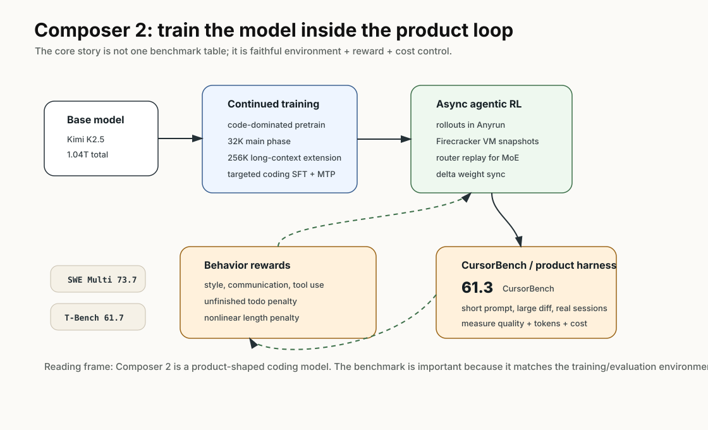
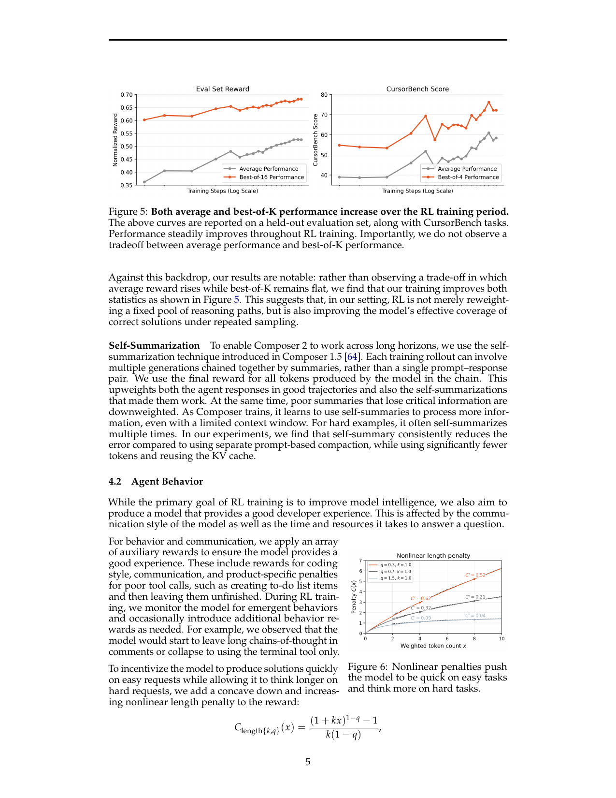
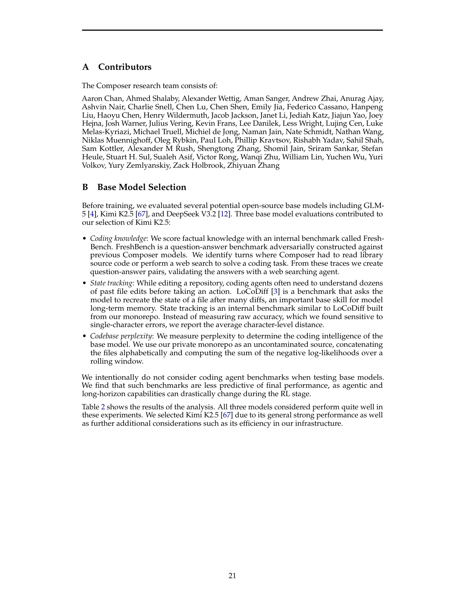
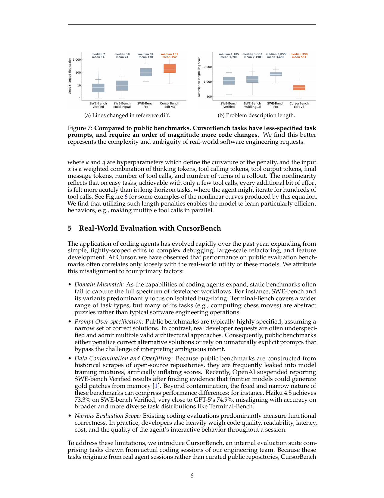
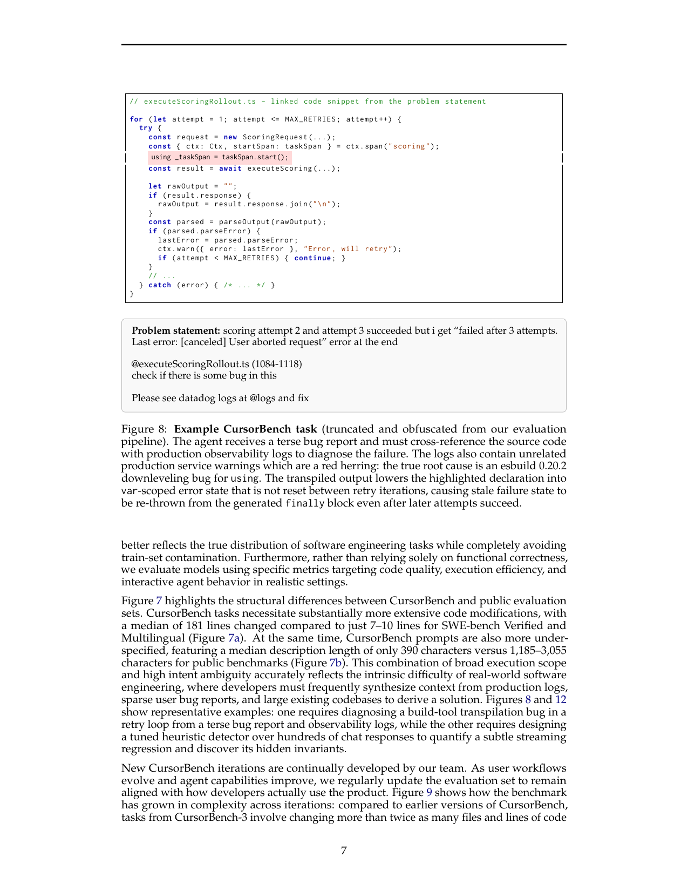
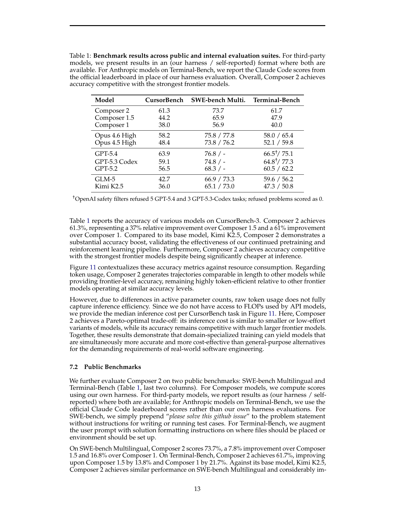
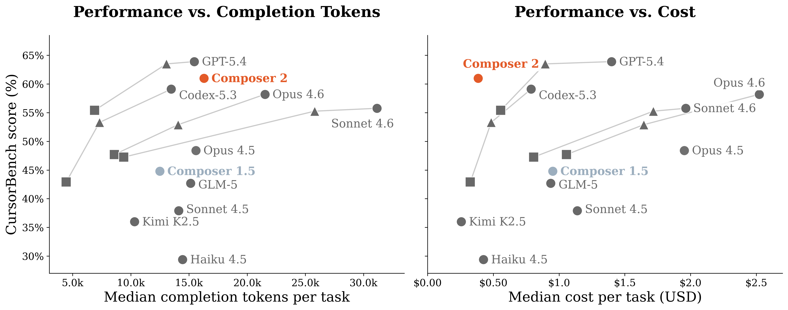

Composer 2：真正有意思的是 Cursor 如何训练一个产品内 coding agent
- Paper: Composer 2 Technical Report
- arXiv: 2603.24477
- 机构: Cursor Research
- 类型: coding agent model / RL infrastructure / internal benchmark report
- 关键词: CursorBench, continued pretraining, asynchronous RL, Anyrun, self-summary, router replay
读法：给人和 agent 的路标
这篇不要按“模型榜单”读，应该按 Cursor 如何把产品里的 coding agent 训练成模型 来读。快速路线是：先看“一句话判断”和产品闭环图，再看 CursorBench 的任务形态，最后看 Anyrun/Router replay/Delta weight sync 这些基础设施细节。
给 agent 以后检索时，关键词是：Kimi K2.5 base、continued pretraining、CursorBench、asynchronous RL、Anyrun、Firecracker VM、router replay、agent behavior rewards。这篇最适合和 Harness Engineering 放在一起看：Composer 2 是一个很具体的“产品 harness 反过来塑造模型”的案例。
一句话判断
Composer 2 的重点不是“又一个 coding benchmark 高分模型”，而是 Cursor 把 Kimi K2.5 这种强 MoE base model 放进真实产品 harness 里继续预训练和 RL：它用 CursorBench 对齐真实开发任务，用 Anyrun 跑大规模环境，用辅助 reward 修 agent 行为，最后在准确率、token 和成本上做 Pareto。
图表优先读法
| 先看 | 图/表 | 读完应该抓住什么 |
|---|---|---|
| 1 | Training/product loop | Composer 2 是产品 harness 反过来塑造模型，不只是公开 benchmark 调参 |
| 2 | CursorBench task shape + case | 真实任务是短 prompt、大 diff、生产日志和构建细节，不像 SWE-bench 小补丁 |
| 3 | Figure 5 | RL 同时提升 average 和 best-of-K，不只是压缩到单一解 |
| 4 | Table 1 | Composer 2 在 CursorBench 提升明显，但并非所有公开榜单都第一 |
| 5 | Performance vs completion tokens | 产品模型必须看 accuracy/cost/token Pareto，不只看 pass rate |
先抓住四个点
- Composer 2 是专门化模型，不是从零训练。 Base model 选的是 Kimi K2.5，1.04T total / 32B active 的 MoE。
- 训练分两大阶段。 先 code-dominated continued pretraining，包括 32K 主阶段、256K long-context extension 和 targeted coding SFT；再做大规模 agentic RL。
- CursorBench 是整篇最有价值的 benchmark。 它来自 Cursor 工程团队真实 coding sessions，比 public benchmark 更少说明、更大改动、更贴近产品。
- 系统工程写得很具体。 Anyrun、Firecracker VM、memory/filesystem snapshot、Fireworks inference、router replay、delta weight sync，这些比单个分数更能解释为什么它能训练出来。
先看我整理的结构图

Composer 2 最值得先看的不是论文里的 overview 截图，而是这个产品闭环：Kimi K2.5 base model 经过 continued pretraining、targeted coding SFT、Anyrun 里的异步 RL，再回到 CursorBench/真实产品 harness 里同时优化质量、token 和成本。
图里有三个锚点：
- base model 不是终点：Kimi K2.5 提供强 coding 底座，但 Composer 2 的增益主要来自继续预训练、SFT 和 agentic RL。
- CursorBench 是产品反馈的压缩版：它把真实 Cursor 工程 session 变成可评测任务，避免只围着公开 benchmark 调模型。
- infrastructure 是方法的一部分：没有 Anyrun、VM snapshot、routing replay、权重同步，1T MoE 的 agent RL 很难稳定跑起来。
论文原图 / 数据作为证据

Figure 5 说明 RL 不是只把概率质量挪到已知好答案上。作者声称 average performance 和 best-of-K 都随训练上升，这意味着模型可达正确解的覆盖面也在变大。
这张图要这样读：
- average performance 上升：说明采一个普通 rollout 的质量在变好，和真实产品延迟/成本更相关。
- best-of-K 也上升：说明模型不是只学会更稳定地产生原有解，而是扩大了可探索的正确解集合。
- 它仍然不是充分证明：图不能单独说明收益来自哪个 reward 或哪个数据源，还需要结合 ablation 和基础设施设置读。
方法 Pipeline
1. Base model selection
Composer 2 不是从零训练。Cursor 在多个候选 base model 里比较 internal coding knowledge、state tracking、internal codebase perplexity，最后选 Kimi K2.5。

Appendix B 的 base model 选择很有意思：
| Model | FreshBench | State Tracking | Internal codebase NLL |
|---|---|---|---|
| DeepSeek V3.2 | 68.9% | 66 | 11.75M |
| Kimi K2.5 | 83.2% | 86 | 13.81M |
| GLM-5 | 79.2% | 92 | 14.11M |
注意它们没有直接用 SWE-bench 选 base model。作者认为 agentic benchmark 的最终表现会被 RL 大幅改变，所以 base 阶段更看 coding knowledge、state tracking 和 codebase perplexity。
这个选择很有产品味：如果目标是继续训练一个 agent，不一定要挑公开 agent benchmark 初始分最高的 base model，而是要挑“知识、状态跟踪、内部代码分布”更适合继续爬坡的底座。
2. Continued pretraining
训练流程：
- 在大规模 code-dominated mixture 上继续预训练。
- 主 compute 放在 32K sequence length。
- 做一段 256K long-context extension。
- 做 targeted coding SFT。
- 训练 MTP layers，用于 speculative decoding，提升生产服务速度。
论文还用 Qwen3-Coder-30B-A3B 做小规模实验，说明 continued pretraining 后的 loss 与后续 RL reward 有预测关系。这一点很实用：如果 internal codebase perplexity 下降能预测 RL 后表现，团队就能更早筛 recipe。
3. Asynchronous RL
Composer 2 的 RL 不是普通数学题单轮采样，而是 coding agent rollout：
- 每个 problem 采样一组 rollouts；
- 每个 rollout 在接近真实 Cursor session 的环境里运行；
- policy gradient 使用 multiple samples per prompt；
- 单 epoch regime，同一个 prompt 不重复训练；
- full-parameter update；
- 训练和 rollout generation 高度异步。
几个算法选择值得记：
- 去掉 GRPO 的 length standardization，避免 length bias。
- 不按 group standard deviation normalize advantage，避免小差异在全对/全错组里被过度放大。
- 不 mask overlong rollouts，因为小规模实验没有收益。
- KL 用
k1 = -log r，避免 k3 在大 KL 时方差爆炸。
4. Agent behavior rewards
Composer 2 不只优化“能不能做对”，还优化“像不像好用的产品 agent”：
- coding style reward；
- communication reward；
- 对坏工具调用加 penalty；
- 对创建 todo 后不完成这类行为加 penalty；
- 观察到模型把 chain-of-thought 写进代码注释、或者退化成只用 terminal tool 时，新增行为 reward；
- 用非线性 length penalty，让简单任务更快，复杂任务允许多想。
这部分是产品模型和 benchmark 模型的差别：用户并不只要 pass/fail，还要成本、延迟、可读性、交互体验。
CursorBench 为什么重要

CursorBench 来自真实 Cursor 工程团队 session，不是公开仓库 scrape。论文强调它解决 public coding benchmark 的几个问题：
- SWE-bench 偏 isolated bug-fixing，任务类型窄。
- Terminal-Bench 类型更广，但有些任务像 puzzle，不是典型软件工程。
- public benchmark 可能泄漏进训练数据。
- 真实开发请求往往欠规范，存在多种合理架构方案。
- 实际产品还关心代码质量、可读性、成本、延迟、interactive behavior。
关键统计：
| 指标 | CursorBench | SWE-bench Verified / Multilingual |
|---|---|---|
| reference diff median lines changed | 181 | 7-10 |
| prompt median length | 390 chars | 1,185-3,055 chars |
| 任务来源 | Cursor 内部真实工程 session | public benchmark |
这个差异很大。CursorBench 的难点不是“题目更长”，反而是 prompt 更短、更模糊，但要改更多代码。
这张图的核心不是炫耀 benchmark 难，而是说明真实开发任务的形状和公开 benchmark 不一样：
- prompt 更短：真实用户往往不会写成 benchmark 题面，很多上下文藏在 repo、日志和产品习惯里。
- diff 更大：真实修复可能牵动多个文件和抽象边界，不是只改 7 到 10 行。
- 评估更主观：真实任务有多种合理实现，所以 CursorBench 必须同时关心 correctness、style、latency 和交互质量。
一个完整 case

Figure 8 是很好的例子。用户只说：
- scoring attempt 2 和 3 成功；
- 最后却报
failed after 3 attempts. Last error: [canceled] User aborted request； - 让 agent 看
executeScoringRollout.ts和 datadog logs 修 bug。
真正原因不是表面日志，而是 esbuild 0.20.2 对 using 的 downleveling bug：transpiled output 把高亮 declaration 降级成 var-scoped error state，导致 stale failure state 没有在 retry iteration 之间重置，最后从 generated finally block 里重新抛出。
这个 case 很能说明 CursorBench 想测什么：
- 读短 bug report；
- 结合代码和生产日志；
- 过滤 irrelevant warnings；
- 理解构建工具 transpilation 的隐含语义；
- 修真实 retry loop，而不是只改表面错误处理。
我会把这个 case 当成整篇的“最小示例”：Composer 2 不是在学 LeetCode，而是在学一个产品工程师如何从含混症状、日志和构建工具细节里定位真实 bug。这个例子比单个排行榜更能解释为什么 Cursor 要自己做 CursorBench。
关键分数


| Model | CursorBench | SWE-bench Multilingual | Terminal-Bench |
|---|---|---|---|
| Composer 2 | 61.3 | 73.7 | 61.7 |
| Composer 1.5 | 44.2 | 65.9 | 47.9 |
| Composer 1 | 38.0 | 56.9 | 40.0 |
| Opus 4.6 High | 58.2 | 75.8 / 77.8 | 58.0 / 65.4 |
| GPT-5.4 | 63.9 | 76.8 / - | 66.5 / 75.1 |
| GLM-5 | 42.7 | 66.9 / 73.3 | 59.6 / 56.2 |
| Kimi K2.5 | 36.0 | 65.1 / 73.0 | 47.3 / 50.8 |
读法：
- Composer 2 在 CursorBench 上从 Composer 1.5 的 44.2 提到 61.3，relative improvement 约 37%。
- 相比 base model Kimi K2.5，CursorBench 从 36.0 到 61.3，说明专门化训练确实有效。
- 它没有全面超过 GPT-5.4，但 cost frontier 上更好，说明 Cursor 的优化目标是“产品可用性”，不是单榜第一。
Infrastructure 细节
Composer 2 的基础设施部分很值得借鉴。
| 组件 | 做什么 | 为什么重要 |
|---|---|---|
| Anyrun | 内部 compute platform，运行 untrusted code | RL 需要真实开发环境，不是静态 prompt |
| Firecracker VM | 每个 pod 是独立 VM，可跑完整开发环境，包括 browser/GUI | 隔离性和真实环境 |
| Pod scheduling | 每个 Anyrun cluster 可调度超过 500 pods/s | RL rollout 很 bursty |
| Snapshot/fork | 支持 filesystem 和 memory level snapshot | 便于 rollout checkpoint、失败恢复、后验分析 |
| Anygress | 控制 pod 出网，代理流量并清理敏感 header | 安全和外部影响控制 |
| Fireworks AI | 负责 RL inference | 训练/推理分离 |
| Router replay | 推理返回 MoE expert indices，训练时强制 replay | 避免 MoE routing 数值差异污染 policy gradient |
| Delta weight sync | 每步只上传新旧权重 diff 到 S3 | 1T 参数模型仍能频繁同步 |
这里的核心是 faithful harness：训练、评测、产品里的 agent 环境尽可能一致。很多 coding agent paper 的问题就是 benchmark harness 和真实产品差太远，Composer 2 反过来把产品 harness 变成训练基础设施。
这部分也解释了一个容易被忽略的点：Composer 2 的“模型能力”其实包含了大量非权重系统设计。Anyrun 负责隔离和环境一致性，Fireworks 负责 rollout inference，router replay 处理 MoE 训练/推理一致性，delta sync 处理 1T 参数模型的更新成本。把这些拿掉，只看模型名和分数，会误读这篇报告。
我怎么看
可信之处：
- CursorBench 的任务形态和 case 很有说服力，尤其是短 prompt、大改动、生产日志、真实 bug。
- Table 1 同时报 internal benchmark、public benchmark 和 cost/token 图，评价维度比较完整。
- Infrastructure 细节足够具体，能解释为什么普通团队很难复现同样的 RL。
需要警惕：
- CursorBench 是内部 benchmark，外部无法完全复查。
- 很多收益来自 Cursor 产品环境、工具、backend、Anyrun，不应简单归因到模型权重。
- Public benchmark 使用 own harness / self-reported 混合列，跨模型比较要读清楚每个数字来源。
对我的价值
对个人 wiki/paper-reading pipeline，Composer 2 最值得借的不是大规模 RL，而是评测思想：
- 用真实工作流做 benchmark，例如“读 paper -> 写 md -> 存图 -> Jekyll build -> commit/push”。
- 记录成本和交互体验，不只记录任务是否成功。
- 把任务设计成欠规范但真实，而不是给模型过度详细的 checklist。
- 对 agent 行为设 reward/规则，例如不提交 Obsidian 状态、不乱改 README、不写不可维护 HTML。
更具体地说，Composer 2 给我的启发是：个人知识库也应该有自己的 CursorBench。比如固定一组真实任务：读论文、抽图、写笔记、修公式、构建页面、推送部署、避免提交本地状态。每次换模型或换 prompt，不只看“能不能完成”，还要看 token、失败恢复、可维护性和最终页面体感。
一句话收束
Composer 2 最值得记住的是：强 coding agent 不是模型单点能力，而是 base model、continued pretraining、真实产品 benchmark、环境基础设施、RL reward 和成本约束一起塑形出来的。